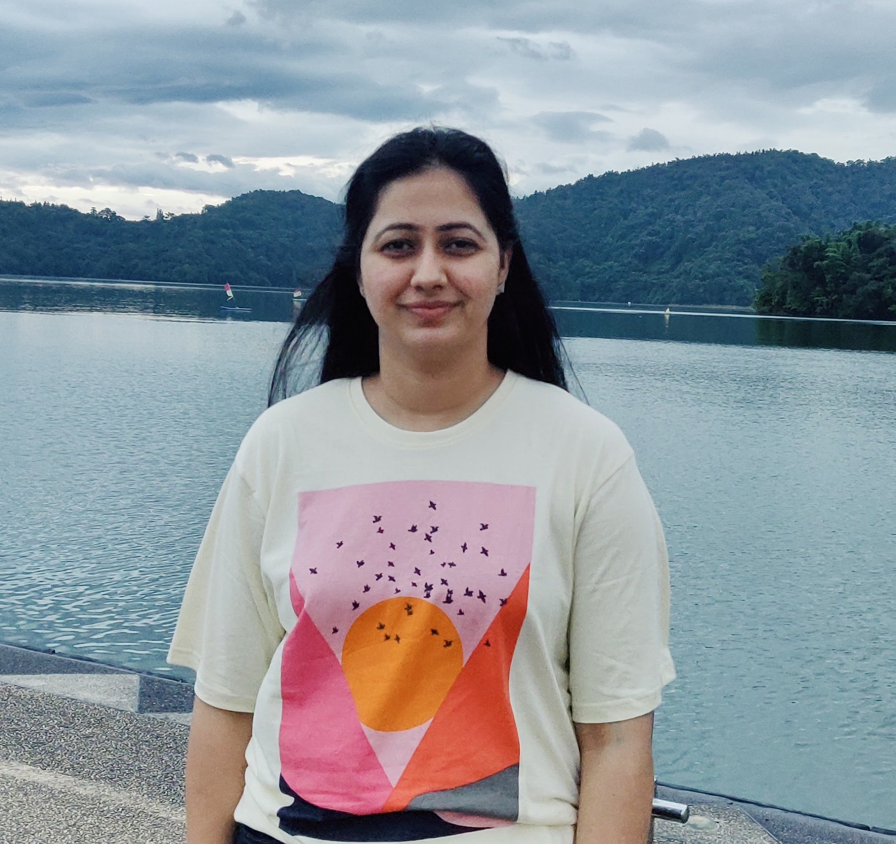

Garima Chhikara
 garimachhikara@dtu.ac.in // garima.chhikara@sit.iitd.ac.inLinkedIn // Scholar // GitHub
Office: Room No. 503D, Academic Building 4, DTU
Hi, I work as Assistant Professor in Delhi Technological University in Computer Science and Engineering Department. I am also a PhD student in School of IT at IIT Delhi, advised by Prof. Abhijnan Chakraborty. My research interests include Fairness in Summarization, Social Network analysis, Computational Social Science. I obtained Masters from IIIT Delhi under the supervision of Prof. Vinayak Naik.